| 名前 | 簡単な説明 |
|---|---|
| airy_ai | Airy 関数Ai(x)の近似値を求めます。 |
| airy_ai_deriv | Airy 関数Ai(x)の微分の近似値を求めます。 |
| airy_bi | Airy 関数Bi(x)の近似値を求めます。 |
| airy_bi_deriv | Airy 関数Bi(x)の微分の近似値を求めます。 |
| 名前 | 簡単な説明 |
|---|---|
| Bessel_i_nu | 第1種変形ベッセル関数 I/4 (x)の近似値を求めます。 |
| Bessel_i_nu_scaled | 第1種変形ベッセル関数 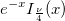 の近似値を求めます。 |
| Bessel_i0 | 第1種変形ベッセル関数の近似値 I0(x)を求めます。 |
| Bessel_i0_scaled | 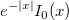 の近似値を求めます。 |
| Bessel_i1 | 第1種変形ベッセル関数 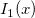 の近似値を求めます。 |
| Bessel_i1_scaled | 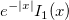 の近似値を求めます。 |
| Bessel_j0 | 第1種変形ベッセル関数 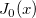 の近似値を求めます。 |
| Bessel_j1 | 第1種変形ベッセル関数 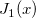 の近似値を求めます。 |
| Bessel_k_nu | 第2種変形ベッセル関数 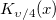 の近似値を求めます。 |
| Bessel_k_nu_scaled | 第2種変形ベッセル関数 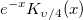 の近似値を求めます。 |
| Bessel_k0 | 第2種変形ベッセル関数 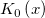 の近似値を求めます。 |
| Bessel_k0_scaled | 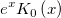 の近似値を求めます。 |
| Bessel_k1 | 第2種変形ベッセル関数 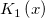 の近似値を求めます。 |
| Bessel_k1_scaled | 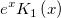 の近似値を求めます。 |
| Bessel_y0 | 第二種ベッセル関数 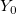 , x > 0 を求めます。 |
| Bessel_y1 | 第二種ベッセル関数 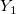 , x > 0 を求めます。 |
| besseli | 第1種変形ベッセル関数 |
| besselj | 第一種ベッセル関数 |
| besselk | 第2種変形ベッセル関数 |
| bessely | 第二種ベッセル関数 |
| Jn(x, n) | 次数nのベッセル関数 |
| Yn(x, n) | 第二種ベッセル関数 |
| J1(x) | 一次のベッセル関数 |
| Y1(x) | 一次の第二種ベッセル関数は Y1(x) と表されます。 |
| J0(x) | ゼロ次のベッセル関数 |
| Y0(x) | ゼロ次の第二種ベッセル関数 |
| 名前 | 簡単な説明 |
|---|---|
| beta(a, b) | ベータ関数 |
| incbeta(x, a, b) | 不完全なベータ関数 |
| 名前 | 簡単な説明 |
|---|---|
| Erf | 誤差関数は 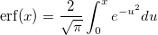 により計算されます。 |
| Erfc | 誤差関数 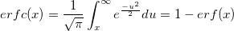 の補数の近似値を計算します。 |
| Erfcinv | 指定されたyに対する逆相補誤差関数の値を計算します。 |
| Erfcx | スケール補正された相補誤差関数は、 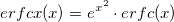 により計算されます。 |
| Erfinv | 誤差関数 の逆関数を計算します。 |
| 名前 | 簡単な説明 |
|---|---|
| Gamma | 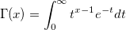 を求めます。 |
| Incomplete_gamma | 正規化された形 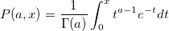 での不完全ガンマ関数を求めます。 |
| Log_gamma | , x > 0 を求めます。 |
| Real_polygamma | xが実数で x≠0, -1, -2, ... かつ k=0,1,......6 の場合、ψ関数 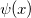 のk階微分近似値を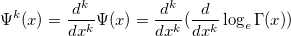 で求めます。 |
| incomplete_gamma(a, x) | 不完全なガンマ関数 |
| gammaln(x) | ガンマ関数の自然対数 |
| Incgamma | 不完全ガンマ関数を計算します。 |
| 名前 | 簡単な説明 |
|---|---|
| Cos_integral | 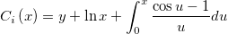 の近似値を求めます。 |
| Cumul_normal | 累積正規分布関数 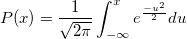 を計算します。 |
| Cumul_normal_complem | 累積正規分布関数 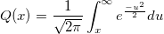 の補数に対する近似値を計算します。 |
| Elliptic_integral_rc | X≥0かつy≠0場合、積分 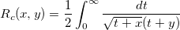 の近似値を計算します。 |
| Elliptic_integral_rd | 積分 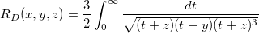 の近似値を計算します。 |
| Elliptic_integral_rf | 積分 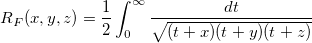 の近似を計算します。 |
| Elliptic_integral_rj | 積分 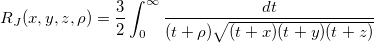 の近似を計算します。 |
| Exp_integral | 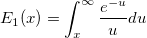 , x>0 を求めます。 |
| Fresnel_c | フレネル積分 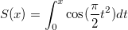 の近似を計算します。 |
| Fresnel_s | フレネル積分 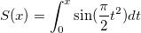 の近似を計算します。 |
| Sin_integral | 式 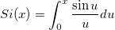 の近似を計算します。 |
| 名前 | 簡単な説明 |
|---|---|
| Kelvin_bei | ケルビン関数 bei x の近似を計算します。 |
| Kelvin_ber | ケルビン関数ber xの近似を計算します。 |
| Kelvin_kei | ケルビン関数kei xの近似を計算します。 |
| Kelvin_ker | ケルビン関数ker xの近似を計算します。 |
| 名前 | 簡単な説明 |
|---|---|
| Jacobian_theta | ヤコビのシータ関数の近似を計算します。 |
| LambertW | ランベルトのW関数の実数分岐に対する近似値を計算します。 |
| Boltzmann | ボルツマン関数 |
| Dhyperbl | 二重矩形双曲線関数 |
| ExpAssoc | 指数アソシエート関数 |
| ExpDecay2 | 指数減衰2（オフセット関数付き） |
| ExpGrow2 | 指数成長2（オフセット関数付き） |
| Gauss | ガウス関数 |
| Hyperbl | 双曲線関数 |
| Logistic | ロジスティック線量反応関数 |
| Lorentz | ローレンツ関数 |
| Poly | 多項式関数 |
| Pulse | パルス関数 |
| LambertW | ランベルトのW関数（「積対数」または「オメガ」関数とも呼ばれる） |
| Erfcx | 相補誤差関数 |